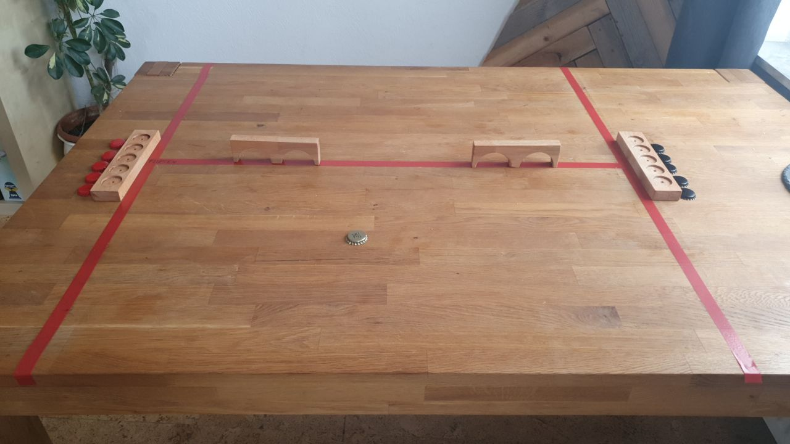
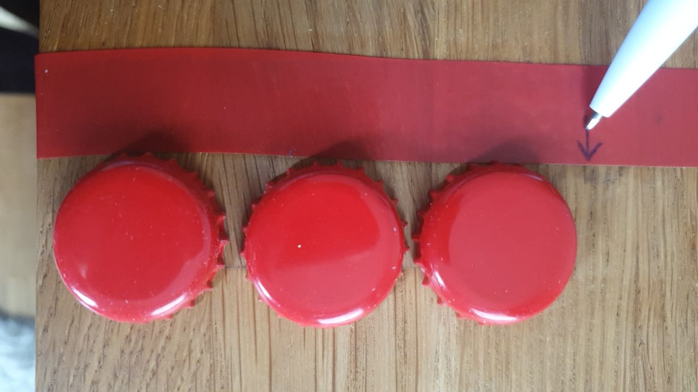
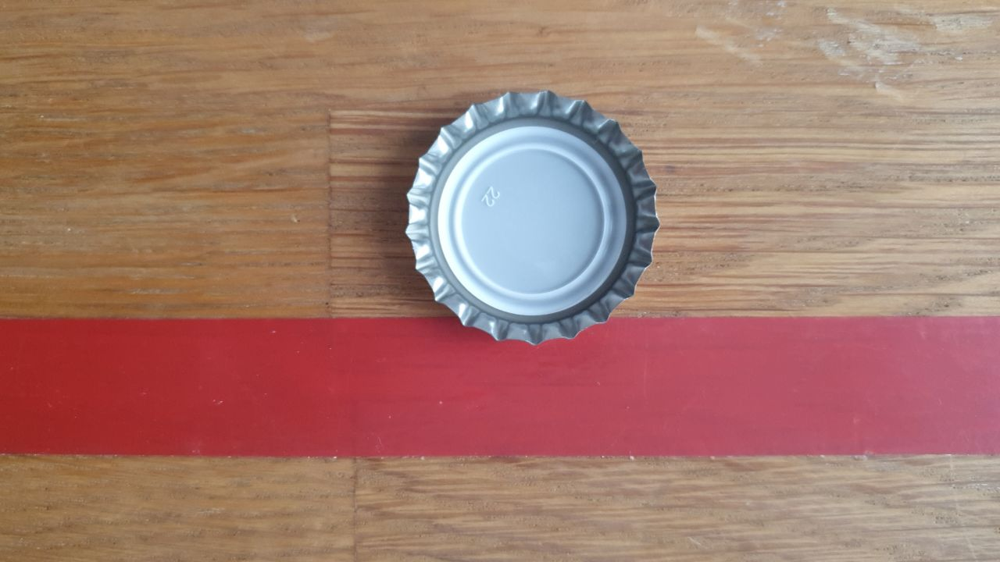
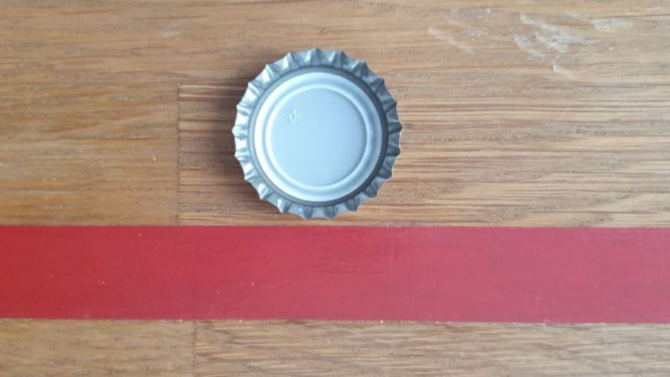

Spielregeln
Spielidee
Flupn ist ein Kronkorkenrotationsspiel.
Versucht mit möglichst viel Geschick einen rotierenden Kronkorken in die andere Tischhälfte zu befördern. Das nennen wir Flupn.
Sammelt Punkte um das Spiel zu gewinnen oder habt einfach Spaß den Kronkorken in Rotation zu halten.
Zeigt Präzision, Geschick und eine ruhige Hand.
Wollt Ihr eure Hälfte verteigen oder eure Gegner:innen zu Fehlern zwingen?
Spielt ihr den sicheren Flupp oder zeigt Ihr Kreativität am Tisch?
Schnell aufbauen und losfluppen!!!
Vorbereitung
- Findet euch in zwei Zweierteams zusammen. Flupn ist ein Teamsport.
- Klebt mithilfe des Klebebandes das H-förmige Spielfeld auf den Tisch. 
- Platziert die Hindernisse auf der Mittellinie.
- Messt einen Abstand von 3 Kronkorken zur Tischkante. Zeichnet hier zwei nach innen zeigende Pfeile auf das Klebeband. („Anflupp-Zone“) 
- Legt die Zählboards an den Spielfeldrand. Jedes Team bekommt eine Zählsteinfarbe (Schwarz/Rot) zugewiesen.
- Nehmt euch den goldenen Spezialkronkorken. Mit diesem werdet ihr fluppen.
Vor deinem ersten Spiel
Mithilfe des Rotationsstoßes wird der Flupp aus der eigenen in die gegnerische Spielfeldhälfte rotierend befördert.
Der Rotationsstoß darf mit einem beliebigen Teil der Hand ausgeführt werden.
Probiert es aus!
Spielziel
Ziel des Spiels ist es, durch geschicktes Befördern des rotierenden Kronkorkens in die gegnerische Hälfte, Punkte zu erzielen. Eine Runde Flupn hat gewonnen, wer zuerst 2 Sätze für sich entscheiden kann. Für einen Satzgewinn benötigt man 5 Punkte. Der dritte Satz muss mit zwei Punkten Vorsprung gewonnen werden. Es wird so lange weiter gespielt, bis dies der Fall ist.
Spielablauf
Der Münzwurf entscheidet wer den Satz beginnt.
Der sogenannte Anflupp eröffnet den Punkt. Platziert hierfür den Kronkorken hinter die Pfeilmarkierung, sodass der Kronkorken innerhalb der Anflupp-Zone liegt.
Spielt nun den Kronkorken durch die bereits beschriebene Technik in das gegnerische Feld.
Hierfür habt ihr im Fehlerfall einen zweiten Anflupp.
Der Kronkorken sollte ab jetzt immer in Rotation gehalten werden.
Das gegnerische Team versucht nun wiederum den Kronkorken rotierend über die Mittellinie in euer Feld zurück zu spielen. Der Kronkorken darf hierfür lediglich einmal berührt werden. Es ist egal welches Teammitglied den Kronkorken spielt.
Nach einem gewonnen Satz werden die Seiten gewechselt.
3 mal pro Satz darf eine misslungener flupp gerettet werden. Beim Retten darf deine Teampartner*in den Kronkorken erneut spielen, solange dieser sich noch in Rotation befindet. Eine Person darf sich niemals selbst retten.
So wird gepunktet
Ihr erhaltet einen Punkt, wenn …
- der Kronkorken aufhört in der gegnerischen Hälfte zu rotieren.
- das gegnerische Team den Kronkorken ohne Rotation zurück spielt
- das gegnerische Team den Kronkorken nicht in vollem Umfang über die Mittellinie spielt (siehe Abbildung). 
- das gegnerische Team ins Aus fluppt. Hierfür muss der Kronkorken mit vollem Umfang außerhalb des Spielfeldes sein (siehe Abbildung). Ein Zacken auf der Linie genügt für eine regulären Flupp. Kein Aus. 
- das gegnerische Team 2 Mal hintereinander nicht korrekt anfluppt.
- wenn bereits zu häufig gerettet wurde.
Wird ein Kronkorken angenommen, obwohl es eigentlich einen Punkt gegeben hätte, wird weiter gespielt und der Anspruch auf den Punkt verfällt.
Weitere Regeln
1 vs 1
Flupn kann auch 1 gegen 1 gespielt werden. Die Rettungsregel entfällt.
Flupplauf
Es werden mindestens 3 PErsonben benötigt. Nachdem die Mitspielenden einmal gefluppt haben rennen sie um den Tisch und stellen sich auf der anderen Seite an.
Bei einem fehlerhaften Flupp scheidet man aus. Die beiden letzten Personen spielen ein Finale bis 5 Punkte.
Umdie
Anstelle des Münzwurfs wird vor jedem Satz ein "Umdie" gespielt. Hierbei wird lediglich mit der Faust gefluppt.
Die Rettung naht
Zusätzliche Rettungsmöglichkeit können durch das Durchspielen der Öffnungen in den Hindernissen erhalten werden.
Der Shot
Auf jeder Feier gerne gesehen! Stellt ein kleines Glas mit einem Getränk eurer Wahl in die Mitte des Spielfelds auf Höhe der Mittellinie.
Wenn jemand das Glas anfluppt, muss diese Person das Glas austrinken, nachdem der Punkt entschieden wurde.
Der Kreativität sind keine Grenzen gesetzt. Überlegt euch eure eigenen Regeln und lasst uns hier daran teilhaben.